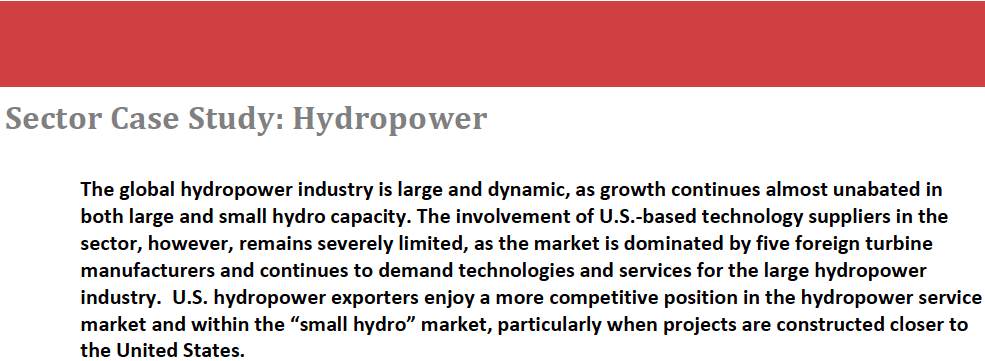
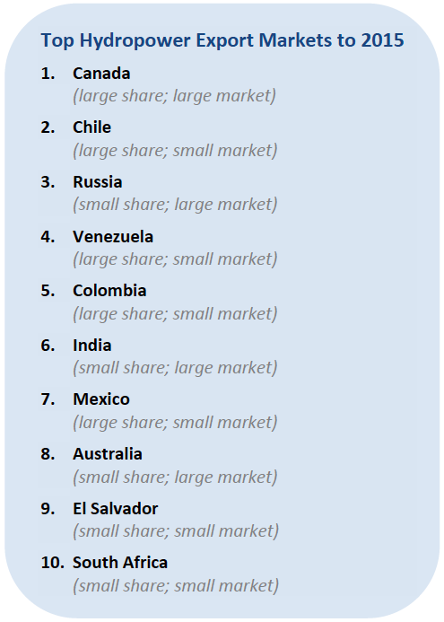

On a global scale, hydropower capacity exceeds all other renewable energy sources combined. In fact, despite little attention, nearly 20 percent of global investment in renewable energy through 2015 is expected to be in the hydropower industry. Total installed hydropower capacity worldwide likely reached 800 GW in 2013 with new installations occurring mostly in developing country markets. The United States (79 GW) has the third largest installed hydropower capacity globally behind only China (229 GW) and Brazil (84 GW).
Overview of the Renewable Energy Market
The vast majority of the hydropower sector’s growth is occurring outside the United States, and has been for some time. The industry installed roughly 26 GW of new capacity in 2012 – led by China (14 GW) – and is expected to continue to grow into the future. China alone enjoys a project pipeline of 80 GW including 16 different large hydropower projects. In total, Bloomberg New Energy Finance notes a global project pipeline of 197 GW.
China’s growth, along with the rest of the world’s, is mainly a reflection of interest in constructing large hydropower facilities. Large hydro receives the lion’s share of global investment in the sector, accounting for roughly 85 percent of total new capacity brought online last year. In fact, there are currently 44 mega-hydropower plants under development, each with more than 1 GW of planned capacity.
Through 2015, ITA expects 67 GW of new capacity to be brought online including both new builds and upgrades to existing facilities. China alone should account for 22 GW of this new capacity, followed distantly by Ethiopia, Russia, Brazil, and Canada.
Regardless of location, almost all new large hydropower projects will be supplied with turbines from one of five dominant turbine producers. European producers Andritz (Austrian), Alstom (French), and Voith (German) are likely to continue to dominate turbine sales outside of China, while Dongfang Electric and Harbin Electric will capture almost all turbine contracts in China. Component part manufacturers for large hydropower projects looking to export abroad will likely need to develop supplier relationships with one of these firms to be successful.

This Top Markets case study is provided as a resource for U.S. exporters by the International Trade Administration. Every effort has been made to ensure that the information presented in this report is complete and accurate as of the date of publication; however, the U.S. Government assumes no responsibility or liability for any errors or omissions. Readers are advised to independently verify any information contained in this intelligence brief prior to relying on it. The information provided in this report does not constitute legal advice. Readers are further advised to conduct their own due diligence and seek the advice of legal counsel before entering into business ventures or other commercial arrangements in this market.
The Hydropower Export Opportunity in the Near-Term
While the United States does not enjoy a particularly competitive position within the large hydropower market, the three dominant European turbine manufactures all have some capacity in the United States and often export from their U.S. facilities for projects in Canada and Latin America. This explains why Canada ranks so highly on ITA’s list of top export markets for the sector.
ITA believes hydropower will account for 15 percent of renewable energy exports through 2015. Canada alone will account for 78 percent of all exports in the sector despite installing just seven percent of new capacity worldwide. By contrast, China – by far the largest hydropower market over the next two years – will account for less than one percent of U.S. hydropower exports; a strong indication of the lack of competitiveness U.S. exporters enjoy in China.
Many of the hydropower projects constructed in Canada actually support cross-border electricity trade to the United States. According to the Canadian Hydro Association, approximately 80 percent of cross-border electricity exports from Canada are in the form of hydropower.
The United States holds a strong position in the small hydro industry – generally defined as projects below 30 MW. The industry provides power to off-grid communities, small towns along rivers, and can generate power from existing dams used for other purposes. Since most new hydropower projects in the United States fall into this category, U.S. companies have developed an expertise that can be exported competitively to other markets.
Demand for small hydropower solutions may increase in markets facing either a loss of power capacity from existing large hydro facilities (perhaps as a result of droughts) or an electorate increasingly frustrated with the environmental degradation often associated with large hydropower development. The sustainability and reliability of new U.S. technologies will likely be the factors to encourage potential overseas deals.
In addition, a substantial share of the hydropower market is dedicated to the replacement of existing capacity, which often requires engineering and technical expertise. Several U.S. firms excel in this part of the hydropower supply chain and should benefit from capacity upgrades globally.
Planning for the Long-Term
Most large hydropower projects install turbines over several years, indicating that the project pipeline under development today will not be completed by 2015. However, in the medium-term, the hydropower market should begin to broaden by including newer and often smaller hydropower technologies that should allow U.S. exporters to compete more effectively. Wave and tidal energy developers, component part suppliers, and turbine manufacturers, for example, stand to make significant strides towards full commercialization within the next decade, opening new opportunities
As small run-of-river technologies that can produce power for rural, off-grid projects continue to be developed and commercialized, U.S. exporters will likely experience a technology advantage over firms from other markets. ITA encourages firms developing these technologies to devise export plans and market entry strategies now to take advantage of the opportunities created by this favorable export scenario. This may entail participation in trade missions, attendance at trade shows, and other activities to introduce concepts and new products to markets that may be unfamiliar with advances in technology development.

1. Bloomberg New Energy Finance, “Hydropower Research Note: US Hydro in 2013 – a trickle or a flood” (9 July 2013) pp. 2
2. Bloomberg New Energy Finance, “Hydropower Research Note: Sizing up global hydropower growth in 2012” (4 April 2013) pp. 1
3. Bloomberg New Energy Finance, “Hydropower Research Note: Sizing up global hydropower growth in 2012” (4 April 2013) pp. 2
4. Bloomberg New Energy Finance, “Hydropower Research Note: Sizing up global hydropower growth in 2012” (4 April 2013) pp. 1
5. Bloomberg New Energy Finance, “Hydropower Research Note: Sizing up global hydropower growth in 2012” (4 April 2013) pp. 1
6. Senate Testimony, May 2012. http://www.wilsoncenter.org/sites/default/files/Canadian%20Hydropower%20Senate%20CES%20Testimony.pdf
About the Office of Energy and Environmental Industries
The Office of Energy and Environmental Industries (OEEI), a part of the International Trade Administration’s Industry and Analysis unit, is dedicated to enhancing the global competitiveness of U.S. energy and environmental companies, expanding their market access, and increasing their exports. Industry analysts perform strategic research and analysis in order to shape and implement trade policy, create conditions that encourage innovation, lower the cost of doing business, and promote U.S. economic growth. For more information or to access other reports related to the Renewable Energy and Energy Efficiency Export Initiative, contact the office at (202) 482-5225 or visit www.export.gov/reee.
The International Trade Administration’s mission is to create prosperity by strengthening the competitiveness of U.S. industry, promoting trade and investment, and ensuring fair trade and compliance with trade laws and agreements.